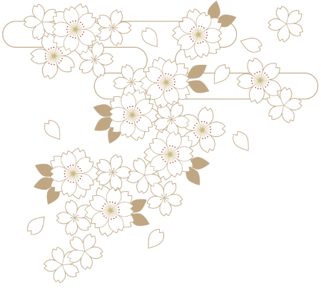

世界の歩み
歴史を賭けた時間遡行軍との戦いから10年。進退窮まった時の政府は戦力の要である審神者の登用に関する制限を段階的に撤廃していった。しかしその後も戦況は悪化の一途を辿り、ついに現状の戦力だけでは戦況をひっくり返すことは不可能となる。
そこで政府は一計を案じた。
過去に干渉し歴史を変える事は許されない。しかし過去には干渉しても歴史に影響を及ぼさない人間も存在する。
自分達の時代だけで戦況を変えられないのであれば、過去の人間の力を借りるのも一つの手である、と。
既に死亡することが決まっている人間ならば、徴用してもその後の歴史に影響はない。
だが、志半ばで非業の死を遂げた偉人達は生きている限り自身の使命を全うしようした。
病や事故で死ぬ人間も、自身の生に心残りがあり歴史という大局を見ようとはしない。
そんな中、唯一うまくいったのは過去も未来も捨て自ら命を絶った自殺者だった。
こうして、政府は過去からの徴用者を自殺者に絞り、来たるべき作戦決行の日の為に戦力を拡充していくのだった。
あなたの物語
自殺という形で人生を終わらせた主人公。しかし、気が付くと目の前には刀の付喪神『刀剣男士』を名乗る山姥切長義の姿があった。長義いわく主人公には審神者の適性があり、戦力拡充の為死亡する直前に保護し未来へ連れてきたのだという。
突拍子の無い話に半信半疑の主人公だったが、過去の自分は既に死んでおり拒否した場合は予定通り死ぬ事になるという。
一生分の勇気をふり絞って死んだ主人公に、もう一度死ぬ勇気は残っていなかった。
かくして消極的ながらも彼女の本丸奮闘記は幕を開ける。
これは一度死を選んだあなたが、もう一度死ぬまでの物語。
ただし、それが戦死か自死か寿命かは誰にもわからない。
何故なら物語はこれから始まり、過去ではなく未来へと続くのだから。
